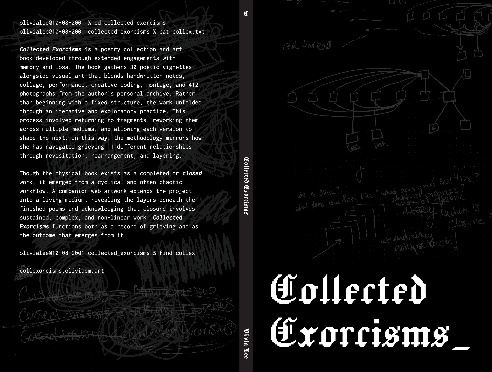
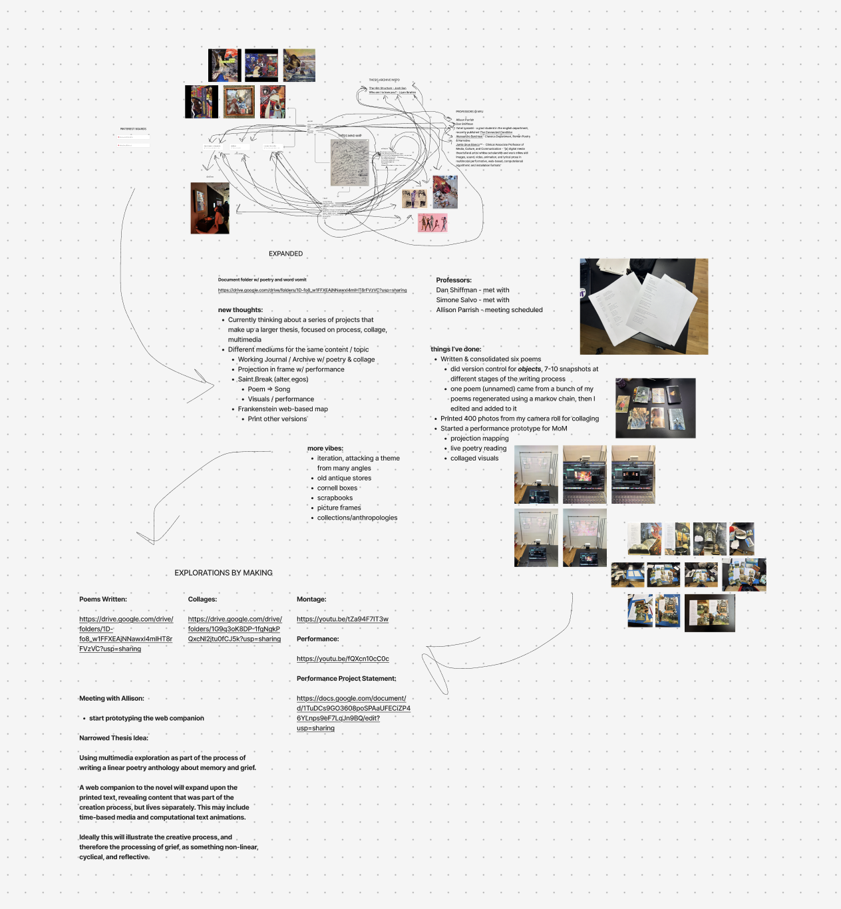
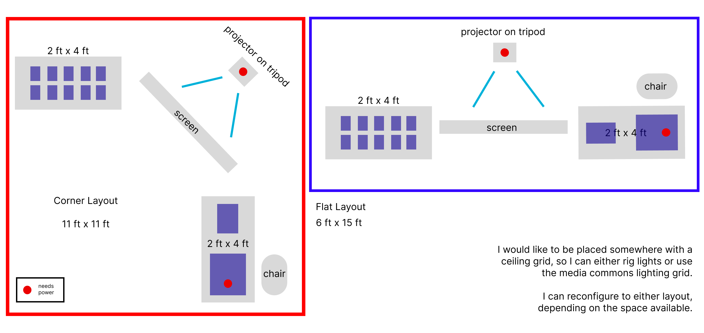

Collected Exorcisms
Collected Exorcisms is poetry collection and art book developed through extended engagements with memory and loss. The book gathers 30 poetic vignettes with accompanying visual art blending handwritten notes, collage, performance, creative coding, montage, and 412 photographs from the author’s personal archive. Rather than beginning with a fixed structure, the work unfolded through an iterative, exploratory practice that involved returning to fragments, reworking them across multiple mediums, and allowing each version to shape the next. This process reflects how she has navigated grieving 11 different relationships through revisitation, rearrangement, and layering.
The final form of the printed book is a completed (‘closed’) piece, but emerged from a cyclical, often chaotic, workflow. To better convey the experience of processing, the author created a companion piece of web art, demonstrating how this concept can exist through a living medium, offering insight into the layers that sit beneath the finished poems and acknowledging that while the completed book may appear resolved, the path toward closure involves sustained, complex, and often non-linear work. Collected Exorcisms functions both as a record of grieving and as the outcome that emerges from it.

Statement / Book Preface:
Ideation:
I knew I wanted to write a poetry collection as well as some sort of web art version of it. I was inspired by Subcutanean by Aaron Reed, which is a procedurally generated horror novel. Originally I had wanted to explore generating poetry. Essentially, I knew my mediums before my concept. Around the time that I was exploring thesis ideas, I was experiencing turbulence in my life. I was really enjoying the poetry that I'd been writing to cope with all of that, and that's when I decided I wanted to pursue something more curated and aligned with the emotions I was dealing with at the time.

Concept
I'm interested in collage as a method of creating meaning, whether that's pictures, video, words, and so on. I took Ali Santana's course Alter Egos, and his methods of abstract storytelling really resonated with me. I knew I was going to write about my personal experience and I wanted the collection of words to also have visual counterparts, because a strong image can convey as much meaning as a poem. I was exploring my personal archive of photos for the Medium of Memory course, and ended up pulling 412 photos from my camera roll that corresponded with subjects and memories in my writing.
I had decided that I wanted to write about a pattern of relationship in my life that really weighed on me. I love gothic and melodramatic imagery, and intensity, so I thought about how I wanted to frame the writing. And more than that, I realized what was so interesting about choosing to write vignettes of relationships and memories for my thesis was that I was working on understanding myself as much as I was working on a project. The concept became about grieving and processing and trying to figure out how to let go.
With that knowledge, I decided not to think too much about the end product, and just start making. I turned most assignments throughout the year into snippets of my thesis. I worked on the website concurrently to the writing, because I wanted the book artifact & the web artifact to be siblings. They are a single concept seen through two different mediums; where the book is fixed (a product of the process towards closure), the website is alive and cyclical (a record of the process itself & a reflection of the impossibility of closure).
The Book
Once I felt like I had enough content, I just started throwing together images and poetry in an InDesign file. Not the best way actually, I should've used photoshop, but I figured it out eventually. I designed most of the book in a weekend, and then made some design the nest couple weeks. Special thanks to Phil Caridi and Kathleen Lewis, who helped me with InDesign, printing, and preparing the file for Lulu.
I decided alongside the printed book, I wanted to bind my own copy as well.


 Link to Book
Link to Book
The Website
The website took a lot more back & forth / user-testing. I really liked the idea of travling through and looping. I made the first prototype, inspired by The Html Review's issue four. You travel through pieces in z-space and get to experience them as their web-art translation.
The First Prototype
User-testing was really helpful. The website was lacking something that would drive a user to the end. It's nice to look at a couple pieces, but there was nothing orienting the user in space, and there wasn't enough stake in it for them either. From there, I decided to move out of the strictly web art space, and move a little closer to game design (or anti-game design, because grief is certainly not a game). I designed a complex mechanic that reflected my process of grieving and revisiting memories, and then enforced the mechanic with a false-terminal that the user interacts with as they move through the experience. The secret is that it's impossible to win, even if you achieve everything there is to achieve, the experience resets.
Final Play-Through
More user testing after implementing this major change allowed me to fine-tune certain details. I added visual cues to help orient the user, like a map and progress indicators. I had worked on related music & video art throughout my thesis, and used those assets to make the website more immersive.
The Installation
Presenting my work was a unique challenge, as I wanted to show the book and the website, which are both individual experiences rather than collective ones, while also creating a space that continued the story of the project and allowed for a group experience. I almost went the performance art route, but was pressed for time. Instead, I created a space with various artifacts meant to be a warped representation of my staging space, framed as an invitation to work with me.

My thesis is ultimately about processing through collage, poetry, and code, so I designed an installation where people can experience the book, the website, and the activity of processing together. I live-projected the website interaction blended with my video art, and created a bookstand for the hand-bound book. The installation holds four perspectives: the bookstand as the object, the website as the fixer, the chair with the book as the follower, and the chair facing back as the voyeur. The audience is invited to either "take my seat" in one of these perspectives, or "work with me" by creating collages and poems out of my remaining photos, misprints, and copies of the book pages, from 11 prompts I wrote.
Thank You's
- Prisha Jain
- Phil Caridi
- Kathleen Lewis
- Ali Santana
- Allison Parrish
- Omi Bahuguna
- Ryan Rotella
- Marlon Evans